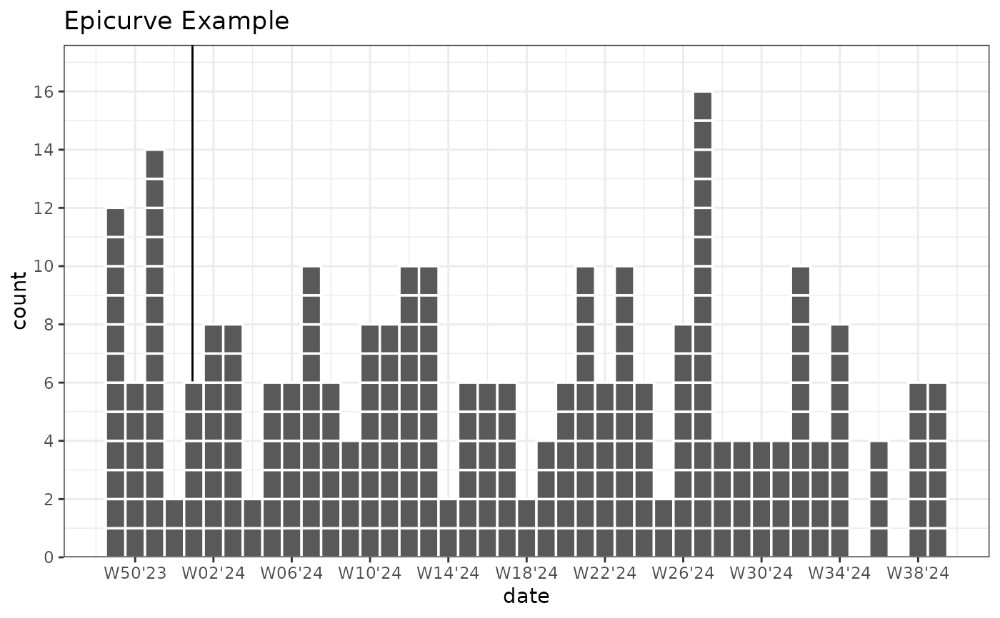
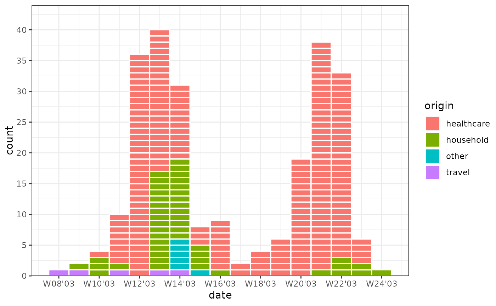

Create an epidemic curve plot or bin/count observations by date periods
Source:R/geom_epicurve.R
geom_epicurve.RdCreates a epicurve plot for visualizing epidemic case counts in outbreaks (epidemiological curves).
An epicurve is a bar plot, where every case is outlined. geom_epicurve additionally provides
date-based aggregation of cases (e.g. per week or month and many more) using bin_by_date.
For week aggregation both isoweek (World + ECDC) and epiweek (US CDC) are supported.
stat_bin_dateand its aliasstat_date_countprovide date based binning only. After binning the by date with bin_by_date, these stats behave like ggplot2::stat_count.geom_epicurve_textadds text labels to cases on epicurve plots.geom_epicurve_pointadds points/shapes to cases on epicurve plots.
Usage
geom_epicurve(
mapping = NULL,
data = NULL,
stat = "epicurve",
position = "stack",
date_resolution = NULL,
week_start = getOption("lubridate.week.start", 1),
width = NULL,
relative.width = 1,
...,
na.rm = FALSE,
show.legend = NA,
inherit.aes = TRUE
)
stat_bin_date(
mapping = NULL,
data = NULL,
geom = "line",
position = "identity",
date_resolution = NULL,
week_start = getOption("lubridate.week.start", 1),
fill_gaps = FALSE,
...,
na.rm = FALSE,
show.legend = NA,
inherit.aes = TRUE
)
stat_date_count(
mapping = NULL,
data = NULL,
geom = "line",
position = "identity",
date_resolution = NULL,
week_start = getOption("lubridate.week.start", 1),
fill_gaps = FALSE,
...,
na.rm = FALSE,
show.legend = NA,
inherit.aes = TRUE
)
geom_epicurve_text(
mapping = NULL,
data = NULL,
stat = "epicurve",
vjust = 0.5,
date_resolution = NULL,
week_start = getOption("lubridate.week.start", 1),
...,
na.rm = FALSE,
show.legend = NA,
inherit.aes = TRUE
)
geom_epicurve_point(
mapping = NULL,
data = NULL,
stat = "epicurve",
vjust = 0.5,
date_resolution = NULL,
week_start = getOption("lubridate.week.start", 1),
...,
na.rm = FALSE,
show.legend = NA,
inherit.aes = TRUE
)Arguments
- mapping
Set of aesthetic mappings created by
aes. Commonly used mappings:x or y: date or datetime. Numeric is technically supported.
fill: for colouring groups.
weight: if data is already aggregated (e.g., case counts).
- data
The data frame containing the variables for the plot
- stat
For the geoms, use "
epicurve" (default) to outline individual cases, or "bin_date" to aggregate data by group. For large datasets, "bin_date" is recommended for better performance by drawing less rectangles.- position
Position adjustment. Currently supports "
stack" forgeom_epicurve().- date_resolution
Character string specifying the time unit for date aggregation. If
NULL(default), no date binning is performed. Possible values include:"hour","day","week","month","bimonth","season","quarter","halfyear","year". Special values:"isoweek": ISO week standard (week starts Monday,week_start = 1)"epiweek": US CDC epiweek standard (week starts Sunday,week_start = 7)"isoyear": ISO year (corresponding year of the ISO week, differs from year by 1-3 days)"epiyear": Epidemiological year (corresponding year of the epiweek, differs from year by 1-3 days) Defaults toNULL, i.e. no binning.
- week_start
Integer specifying the start of the week (1 = Monday, 7 = Sunday). Only used when
date_resolutioninvolves weeks. Defaults to 1 (Monday). Overridden by"isoweek"(1) and"epiweek"(7) settings.- width
Numeric value specifying the width of the bars. If
NULL, calculated based ondate_resolutionandrelative.width.- relative.width
Numeric value between 0 and 1 adjusting the relative width of bars. Defaults to 1
- ...
Other arguments passed to
layer. For example:colour: Colour of the outlines around cases. Disable with
colour = NA. Defaults to"white".linewidth: Width of the case outlines.
For
geom_epicurve_text()additionalgeom_textarguments are supported:fontface: Font face for text labels: one of "plain", "bold", "italic", "bold.italic".
family: The font family.
size: The font size.
- na.rm
If
FALSE, the default, missing values are removed with a warning. IfTRUE, missing values are silently removed.- show.legend
logical. Should this layer be included in the legends?
NA, the default, includes if any aesthetics are mapped.FALSEnever includes, andTRUEalways includes. It can also be a named logical vector to finely select the aesthetics to display.- inherit.aes
If
FALSE, overrides the default aesthetics, rather than combining with them. This is most useful for helper functions that define both data and aesthetics and shouldn't inherit behaviour from the default plot specification, e.g.borders().- geom
The geometric object to use to display the data for this layer. When using a
stat_*()function to construct a layer, thegeomargument can be used to override the default coupling between stats and geoms.- fill_gaps
Logical; If
TRUE, gaps in the time series will be filled with a count of 0. Often needed for line charts.- vjust
Vertical justification of the text or shape. Value between 0 and 1. Used by
geom_epicurve_textandgeom_epicurve_pointto control vertical positioning within the case rectangles. Defaults to 0.5 (center).
Details
Epi Curves are a public health tool for outbreak investigation. For more details see the references.
References
Centers for Disease Control and Prevention. Quick-Learn Lesson: Using an Epi Curve to Determine Mode of Spread. USA. https://www.cdc.gov/training/quicklearns/epimode/
Dicker, Richard C., Fátima Coronado, Denise Koo, and R. Gibson Parrish. 2006. Principles of Epidemiology in Public Health Practice; an Introduction to Applied Epidemiology and Biostatistics. 3rd ed. USA. https://stacks.cdc.gov/view/cdc/6914
Examples
# Basic epicurve with dates
library(ggplot2)
set.seed(1)
plot_data_epicurve_imp <- data.frame(
date = rep(as.Date("2023-12-01") + ((0:300) * 1), times = rpois(301, 0.5))
)
ggplot(plot_data_epicurve_imp, aes(x = date, weight = 2)) +
geom_vline_year(break_type = "week") +
geom_epicurve(date_resolution = "week") +
labs(title = "Epicurve Example") +
scale_y_cases_5er() +
# Correct ISOWeek labels for week-year
scale_x_date(date_breaks = "4 weeks", date_labels = "W%V'%g") +
coord_equal(ratio = 7) + # Use coord_equal for square boxes. 'ratio' are the days per week.
theme_bw()

# Categorical epicurve
library(tidyr)
library(outbreaks)
sars_canada_2003 |> # SARS dataset from outbreaks
pivot_longer(starts_with("cases"), names_prefix = "cases_", names_to = "origin") |>
ggplot(aes(x = date, weight = value, fill = origin)) +
geom_epicurve(date_resolution = "week") +
scale_x_date(date_labels = "W%V'%g", date_breaks = "2 weeks") +
scale_y_cases_5er() +
theme_classic()
